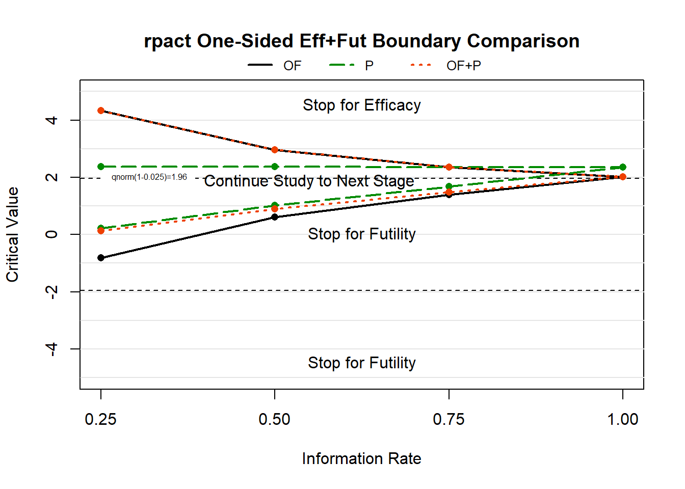

Interim Monitoring for Futility/Efficacy/Safety
Overview
In this module we introduce the “original” adaptive trial element of interim monitoring to stop a trial early for efficacy, futility, and/or safety. In these designs we may terminate a trial early because it is highly unlikely we would be able to detect a significant effect if we continued (i.e., futility), because we already have sufficient evidence of a significant treatment effect (i.e., efficacy), or because there are concerns relating to adverse events (i.e., safety).
Code Examples in R
Given the lengthy history of developing methods for interim monitoring, there are a host of software options available today. Within R, some of the packages to consider include:
rpact: a package for confirmatory adaptive clinical trial design, simulation, and analysis; a Shiny app is also availablegsDesign: includes both an R package and an online interface to estimate group sequential boundariesGroupSeq: a package with a graphical user interface accessed via R which helps to avoid having to learn too much coding or syntax to access boundariesRCTdesign: a package initially developed for S-Plus, but with a new version for use in R; need to request access via signed license agreement which can be a little burdensomeSequential: a package focused on exact sequential analysis for Poisson and binomial data where group sizes do not have to be specified in advance
We will focus on rpact for our examples below:
library(rpact)rpact and the getDesignGroupSequential()
Function
The powerhouse function getDesignGroupSequential()
allows us to specify numerous elements of various group sequential
designs.
# Syntax: using getDesignGroupSequential function to calculate interim monitoring boundaries
design <- getDesignGroupSequential(
sided = <specify if alternative hypothesis is one- or two-sided>, # default is 1 for one-sided, can also specified 2 for two-sided hypothesis test
alpha = <desired type I error rate>, # default is 0.025
beta = <desired type II error rate>, # default is 0.20 (i.e., power=1-beta, so default is 80% power)
kMax = <maximum number of stages>, # default is 3, number of interim analyses is kMax-1
informationRates = <fixed information rates prior to start of trial when interim monitoring will occur>, # default is (1:kMax)/kMax, can manually specify and ignore kMax argument
typeOfDesign = <type of boundaries for efficacy monitoring>, # many choices (see documentation) including O'Brien-Fleming ("OF"), Pocock ("P"), and alpha-spending versions ("asOF" and "asP")
typeBetaSpending = <type of boundaries for futility monitoring>, # many choices (see documentation) including O'Brien-Fleming ("bsOF") and Pocock ("bsP")
futilityBounds = <manually defined futility boundaries on the test statistic Z-scale> # can define futility with desired rules or use spending in next argument
)rpact and Monitoring for Only Efficacy
In some settings, we may only wish to monitor our clinical trial to allow stopping for efficacy. In this setting, we would only stop early if we observed an overwhelming effect for our outcome that is being monitored.
Two-Sided Efficacy Boundaries
Let’s start by exploring a few different boundaries and compare them graphically. We’ll assume we are interested in four equally spaced stages after 25%, 50%, 75%, and 100% of the trial enrollment has been observed:
eo_of <- getDesignGroupSequential(typeOfDesign = "OF", kMax = 4, sided=2, alpha=0.05) # O'Brien-Fleming
eo_hp <- getDesignGroupSequential(typeOfDesign = "HP", kMax = 4, sided=2, alpha=0.05) # Haybittle-Peto
eo_asof <- getDesignGroupSequential(typeOfDesign = "asOF", kMax = 4, sided=2, alpha=0.05) # Alpha-spending O'Brien-Fleming-like boundary
eo_asp <- getDesignGroupSequential(typeOfDesign = "asP", kMax = 4, sided=2, alpha=0.05) # Alpha-spending Pocock-like boundaryThe package includes the ability to extract these objects and make a plot:
# create plot of stopping boundaries
designSet <- getDesignSet(designs = c(eo_of, eo_hp, eo_asof, eo_asp), variedParameters = "typeOfDesign")
plot(designSet,
type=1, # can plot boundaries with type=1, but also plot other characteristics (see ?plot.TrialDesignSet)
legendPosition = 2) # functionality doesn't seem to work to move legend placement
However, the legend placement argument does not seem to be working, making it a little challenging to view. Instead, we can create our own figure by extracting the relevant information. First let’s look at the R output for our O’Brien-Fleming object and compare with the extracted critical values:
print(eo_of) # review output; without print() in Rmd it creates nicely formatted results## ## Design parameters and output of group sequential design
##
## ### User defined parameters
##
## * *Maximum number of stages*: 4
## * *Stages*: 1, 2, 3, 4
## * *Significance level*: 0.0500
## * *Test*: two-sided
##
## ### Derived from user defined parameters
##
## * *Information rates*: 0.250, 0.500, 0.750, 1.000
##
## ### Default parameters
##
## * *Type of design*: O'Brien & Fleming
## * *Type II error rate*: 0.2000
## * *Two-sided power*: FALSE
## * *Tolerance*: 1e-08
##
## ### Output
##
## * *Cumulative alpha spending*: 5.153e-05, 0.004221, 0.02091, 0.0500
## * *Critical values*: 4.049, 2.863, 2.337, 2.024
## * *Stage levels (one-sided)*: 2.576e-05, 0.0021, 0.009708, 0.02147eo_of_crit <- eo_of$criticalValues # extracts the critical values, which here are symmetric
eo_of_crit # check values are correct## [1] 4.048591 2.862786 2.337455 2.024295Now that we see we’ve extracted the correct information, we can extract for each boundary and create a plot:
# extract critical values for all objects
eo_hp_crit <- eo_hp$criticalValues
eo_asof_crit <- eo_asof$criticalValues
eo_asp_crit <- eo_asp$criticalValues
# Plot boundaries
plot(x=NA, y=NA, xlim=c(0.25,1), ylim=c(-5,5), xlab='Information Rate', ylab='Critical Value', xaxt='n', main='rpact Two-Sided Efficacy Boundary Comparison')
axis(1, at=seq(0.25,1,by=0.25) ) # label x-axis
abline(h=seq(-6,6,by=1), col='gray90') # add horizontal lines for easier reference
abline(h=c(-1,1)*qnorm(1-0.025), lty=2) # add critical values at Z=+/-1.96 to reflect standard group sequential boundaries
legend(x=0.25,y=qnorm(1-0.025)+0.4, "qnorm(1-0.025)=1.96", cex=0.5, adj=0.052, box.col='white')
lines(x=seq(0.25,1,by=0.25), y=eo_of_crit, type='o', lwd=2, pch=16)
lines(x=seq(0.25,1,by=0.25), y=-eo_of_crit, type='o', lwd=2, pch=16)
lines(x=seq(0.25,1,by=0.25), y=eo_asof_crit, type='o', lwd=2, pch=16, col='green4', lty=5)
lines(x=seq(0.25,1,by=0.25), y=-eo_asof_crit, type='o', lwd=2, pch=16, col='green4', lty=5)
lines(x=seq(0.25,1,by=0.25), y=eo_hp_crit, type='o', lwd=2, pch=16, col='orangered2', lty=3)
lines(x=seq(0.25,1,by=0.25), y=-eo_hp_crit, type='o', lwd=2, pch=16, col='orangered2', lty=3)
lines(x=seq(0.25,1,by=0.25), y=eo_asp_crit, type='o', lwd=2, pch=16, col='blue', lty=4)
lines(x=seq(0.25,1,by=0.25), y=-eo_asp_crit, type='o', lwd=2, pch=16, col='blue', lty=4)
# Add legend
legend(horiz=T, xpd=T, 'top', inset=-0.1, col=c('black','green4','orangered2','blue'), lwd=2, legend=c('OF','asOF','HP','ASP'), bty='n', cex=0.8, lty=c(1,5,3,4))
# Add text to note stopping rules
text(x=0.625, y=4.5, "Stop for Efficacy")
text(x=0.625, y=-4.5, "Stop for Efficacy")
text(x=0.625, y=0, "Continue Study to Next Stage")From the figure comparing stopping boundaries, there are a few trends worth highlighting:
- O’Brien-Fleming (OF) and the alpha-spending O’Brien-Fleming-like boundary (asOF) are very similar, but we do see that the alpha-spending is slightly more conservative at earlier interim looks.
- Both Haybittle-Peto (HP) and the alpha-spending Pocock-like boundary (asP) have the same critical value at the first three looks. However, HP is more conservative, because at the final look its value of 1.982751 is very similar to the traditional threshold of 1.96. In contrast, asP’s boundary at the end of the study is now 2.3500295.
- Boundaries that are more conservative early on tend to be most similar to designs without interim monitoring for futility for the final analysis.
One-Sided Efficacy Boundaries
We can also easily make the same figure we had before by modifying
some arguments in getDesignGroupSequential():
sidedbecomes 1alphabecomes 0.025
You may be wondering, why would we change our \(\alpha\) from 0.05 to 0.025? In practice, we could choose a more liberal one-sided \(\alpha=0.05\), however this would change our critical value from 1.959964 at \(\alpha=0.025\) to 1.6448536 at \(\alpha=0.05\). This could increase our risk of a type I error (i.e., falsely finding an effect when none exists). Depending on the context, we may wish to use the more conservative one-sided \(\alpha=0.025\).
Now, let’s examine the modified code and observe the boundaries. We’ll add a comparison with \(\alpha=0.05\) for our O’Brien-Fleming boundary for comparison:
eo_of1 <- getDesignGroupSequential(typeOfDesign = "OF", kMax = 4, sided=1, alpha=0.025) # O'Brien-Fleming
eo_hp1 <- getDesignGroupSequential(typeOfDesign = "HP", kMax = 4, sided=1, alpha=0.025) # Haybittle-Peto
eo_asof1 <- getDesignGroupSequential(typeOfDesign = "asOF", kMax = 4, sided=1, alpha=0.025) # Alpha-spending O'Brien-Fleming-like boundary
eo_asp1 <- getDesignGroupSequential(typeOfDesign = "asP", kMax = 4, sided=1, alpha=0.025) # Alpha-spending Pocock-like boundary
# add OBF with 0.05 alpha
eo_of1_alpha05 <- getDesignGroupSequential(typeOfDesign = "OF", kMax = 4, sided=1, alpha=0.05) # O'Brien-Fleming with 0.05 boundary
# extract critical values
eo_of1_crit <- eo_of1$criticalValues
eo_hp1_crit <- eo_hp1$criticalValues
eo_asof1_crit <- eo_asof1$criticalValues
eo_asp1_crit <- eo_asp1$criticalValues
eo_of1_alpha05_crit <- eo_of1_alpha05$criticalValues
# compare OBF with 0.025 and 0.05
rbind( 'Two-Sided OBF with alpha=0.05'=eo_of_crit, 'One-Sided OBF with alpha=0.025'=eo_of1_crit, 'One-Sided OBF with alpha=0.05'=eo_of1_alpha05_crit)## [,1] [,2] [,3] [,4]
## Two-Sided OBF with alpha=0.05 4.048591 2.862786 2.337455 2.024295
## One-Sided OBF with alpha=0.025 4.048591 2.862786 2.337455 2.024296
## One-Sided OBF with alpha=0.05 3.466200 2.450973 2.001211 1.733100First, we see the top two rows are the same for our two-sided O’Brien-Fleming boundary with \(\alpha=0.05\) and our one-sided O’Brien-Fleming boundary with \(\alpha=0.025\). This is because our two-sided boundary assumed that our \(\alpha=0.05\) was distributed symmetrically with 0.025 on both sides.
From the comparison of our one-sided O’Brien Fleming boundaries, the lower row with \(\alpha=0.05\) has lower critical value thresholds, making it more likely to declare significance.
For visual comparison of boundaries:
# Plot boundaries
plot(x=NA, y=NA, xlim=c(0.25,1), ylim=c(-5,5), xlab='Information Rate', ylab='Critical Value', xaxt='n', main='rpact One-Sided Efficacy Boundary Comparison')
axis(1, at=seq(0.25,1,by=0.25) ) # label x-axis
abline(h=seq(-6,6,by=1), col='gray90') # add horizontal lines for easier reference
abline(h=c(-1,1)*qnorm(1-0.025), lty=2) # add critical values at Z=+/-1.96 to reflect standard group sequential boundaries
legend(x=0.25,y=qnorm(1-0.025)+0.4, "qnorm(1-0.025)=1.96", cex=0.5, adj=0.052, box.col='white')
lines(x=seq(0.25,1,by=0.25), y=eo_of1_crit, type='o', lwd=2, pch=16)
lines(x=seq(0.25,1,by=0.25), y=eo_of1_alpha05_crit, type='o', lwd=2, pch=16, col='gray65')
lines(x=seq(0.25,1,by=0.25), y=eo_asof1_crit, type='o', lwd=2, pch=16, col='green4', lty=5)
lines(x=seq(0.25,1,by=0.25), y=eo_hp1_crit, type='o', lwd=2, pch=16, col='orangered2', lty=3)
lines(x=seq(0.25,1,by=0.25), y=eo_asp1_crit, type='o', lwd=2, pch=16, col='blue', lty=4)
# Add legend
legend(horiz=T, xpd=T, 'top', inset=-0.1, col=c('black','gray65','green4','orangered2','blue'), lwd=2, legend=c('OF','OF 0.05','asOF','HP','ASP'), bty='n', cex=0.8, lty=c(1,1,5,3,4))
# Add text to note stopping rules
text(x=0.625, y=4.5, "Stop for Efficacy")
text(x=0.625, y=-4.5, "Continue Study to Next Stage")
text(x=0.625, y=0, "Continue Study to Next Stage")
From the figure comparing stopping boundaries, there are a few trends worth highlighting:
- We can visually see that the O’Brien-Fleming with \(\alpha=0.025\) (OF) has higher critical value thresholds compared to the O’Brien-Fleming boundary with \(\alpha=0.05\) (OF 0.05).
- All boundaries here are identical to our previous two-sided figure since we used \(\alpha=0.025\), but there is no lower boundary.
- For one-sided hypothesis tests, the directionality of our test is
very important. We must be careful to ensure we are
implementing the proper test:
- If we are testing \(H_1\colon \mu_{trt} > \mu_{con}\) and our estimate is \(\delta = \mu_{trt} - \mu_{con}\), then we would want a positive critical value to stop the study early for efficacy in our one-sided test. For example, if \(Z=5\) we would stop at any interim look for all presented methods.
- If \(Z=-5\) for our one-sided test with \(H_1\colon \mu_{trt} > \mu_{con}\), we would continue the study because we do not have evidence of efficacy. (However, if we had incorporated interim monitoring for futility we might have stopped for futility.)
rpact and Monitoring for Only Futility
Our previous section examined efficacy-only interim monitoring. We can also design studies where we are only monitoring for futility, indicating we would only stop early if it is highly unlikely that we would be able to declare efficacy at the conclusion of the trial if we reached full enrollment.
Two-Sided Futility Boundaries
Let’s start by exploring a few different boundaries and compare them
graphically. We’ll assume we are interested in four equally spaced
stages after 25%, 50%, 75%, and 100% of the trial enrollment has been
observed. Using getDesignGroupSequential(), we need to add
an argument that manually defines \(\alpha\)-spending via the
userAlphaSpending argument:
# Two-sided O'Brien-Fleming futility boundaries
fo_of <- getDesignGroupSequential(typeOfDesign = "asUser", # use asUser to note we are defining a custom design
alpha=0.05, # defines alpha level for two-sided test
userAlphaSpending = c(0, 0, 0, 0.05), # sets our alpha-thresholds for stopping at each stage (0 corresponds to being impossible to stop since p-values may be approximately 0 with asymptotics but are not exact without special tests)
typeBetaSpending = "bsOF", # O'Brien-Fleming futility boundaries
bindingFutility = FALSE, # TRUE or FALSE to determine if a study MUST stop if crossing the boundary, recommend FALSE in practice to allow DSMB to take into all evidence in making recommendations
kMax = 4,
sided=2,
beta=0.2) # desired type II error rate (i.e., power=1-beta)
# Two-sided Pocock futility boundaries
fo_p <- getDesignGroupSequential(typeOfDesign = "asUser", alpha=0.05, userAlphaSpending = c(0,0,0,0.05),
typeBetaSpending = "bsP", # Pocock futility boundaries
bindingFutility = FALSE, kMax = 4, sided=2, beta=0.2)Let’s dissect some of the output and how it may look differently from our efficacy-only boundary:
print(fo_of)## ## Design parameters and output of group sequential design
##
## ### User defined parameters
##
## * *Type of design*: No early efficacy stop
## * *Maximum number of stages*: 4
## * *Stages*: 1, 2, 3, 4
## * *Significance level*: 0.0500
## * *Test*: two-sided
## * *Type of beta spending*: O'Brien & Fleming type beta spending
##
## ### Derived from user defined parameters
##
## * *Information rates*: 0.250, 0.500, 0.750, 1.000
##
## ### Default parameters
##
## * *Type II error rate*: 0.2000
## * *Two-sided power*: FALSE
## * *Binding futility*: FALSE
## * *Beta adjustment*: TRUE
## * *Tolerance*: 1e-08
## * *User defined alpha spending*: 0.00, 0.00, 0.00, 0.05
##
## ### Output
##
## * *Power*: 0.0000, 2.872e-08, 5.862e-08, 0.8000
## * *futilityBoundsNonBinding*: NA, 0.587, 1.369
## * *Cumulative alpha spending*: 0.0000, 0.0000, 0.0000, 0.0500
## * *Cumulative beta spending*: 0.00000, 0.06281, 0.13558, 0.20000
## * *Critical values*: Inf, Inf, Inf, 1.960
## * *Stage levels (one-sided)*: 0.0000, 0.0000, 0.0000, 0.0250From print(fo_of) in the lower Output:
section:
- We now have a
futilityBoundsNonBindingline that only includes 3 values, one of which isNA:- These three values represent our first three stages, which correspond to our interim analyses since the fourth stage means the trial is complete.
- The first interim look with this design is
NA, indicating that for the chosen boundary type and location of the interim look there is no setting where the design would recommend terminating for futility. In other words, we will always enroll at least 50% of the participants in our study using these O’Brien-Fleming boundaries for futility monitoring, assuming the DSMB or external factors do not terminate the trial before completion. - Note, the because there is a stage without a valid futility
boundary, the default behavior in
rpactis to reallocate our \(\beta\)-spending to later stages. If you wish to leave the first stage \(\beta\) “unspent”, you can add the argumentbetaAdjustment=Fto the function.
- The
Critical valuesline includes 4 values, three of which are \(\infty\):- The “fourth” stage critical value is represented by the
Critical valuesrow, where we see the final threshold is our \(Z\)-score based on a two-sided test with \(\alpha=0.05\) (i.e.,qnorm(0.975)=1.96). - The three
Infvalues indicate it is impossible to stop for efficacy since we will never observe a test statistic of \(Z=\infty\). - In practice, we could also set the critical values to be very large (e.g., \(Z=5\)) since this would correspond to a very large treatment effect.
- The “fourth” stage critical value is represented by the
Let’s create our plots in a similar way to our efficacy examples to see these two-sided boundaries.
# extract critical values for all objects FOR FUTILITY BOUNDS
fo_of_fbnd <- fo_of$futilityBounds
fo_p_fbnd <- fo_p$futilityBounds
# extract critical values for all objects FOR EFFICACY
fo_of_crit <- fo_of$criticalValues
fo_p_crit <- fo_p$criticalValues
# Plot boundaries
plot(x=NA, y=NA, xlim=c(0.25,1), ylim=c(-5,5), xlab='Information Rate', ylab='Critical Value', xaxt='n', main='rpact Two-Sided Futility Boundary Comparison')
axis(1, at=seq(0.25,1,by=0.25) ) # label x-axis
abline(h=seq(-6,6,by=1), col='gray90') # add horizontal lines for easier reference
abline(h=c(-1,1)*qnorm(1-0.025), lty=2) # add critical values at Z=+/-1.96 to reflect standard group sequential boundaries
legend(x=0.25,y=qnorm(1-0.025)+0.4, "qnorm(1-0.025)=1.96", cex=0.5, adj=0.052, box.col='white')
lines(x=seq(0.25,1,by=0.25), y=c(fo_of_fbnd, fo_of_crit[4]), type='o', lwd=2, pch=16)
lines(x=seq(0.25,1,by=0.25), y=-c(fo_of_fbnd, fo_of_crit[4]), type='o', lwd=2, pch=16)
lines(x=seq(0.25,1,by=0.25), y=c(fo_p_fbnd, fo_p_crit[4]), type='o', lwd=2, pch=16, col='green4', lty=5)
lines(x=seq(0.25,1,by=0.25), y=-c(fo_p_fbnd, fo_p_crit[4]), type='o', lwd=2, pch=16, col='green4', lty=5)
# Add legend
legend(horiz=T, xpd=T, 'top', inset=-0.1, col=c('black','green4'), lwd=2, legend=c('OF','P'), bty='n', cex=0.8, lty=c(1,5))
# Add text to note stopping rules
text(x=0.625, y=4.5, "Continue Study to Next Stage")
text(x=0.625, y=-4.5, "Continue Study to Next Stage")
text(x=0.625, y=0, "Stop for Futility")From the figure comparing stopping boundaries, there are a few trends worth highlighting:
- Unlike with efficacy boundaries, Pocock (P) futility boundaries are not constant over all stages.
- As noted before, the O’Brien-Fleming (OF) boundaries do not have an interim stopping rule at the first stage.
One-Sided Futility Boundaries
We can also modify our previous futility boundaries for a one-sided hypothesis test. Here we will again change \(\alpha=0.05\) to \(\alpha=0.025\) for consistency with our previous example:
# One-sided O'Brien-Fleming futility boundaries
fo_of1 <- getDesignGroupSequential(typeOfDesign = "asUser", # use asUser to note we are defining a custom design
alpha=0.025, # defines alpha level for one-sided test
userAlphaSpending = c(0, 0, 0, 0.025), # sets our alpha-thresholds for stopping at each stage (0 corresponds to being impossible to stop since p-values may be approximately 0 with asymptotics but are not exact without special tests)
typeBetaSpending = "bsOF", # O'Brien-Fleming futility boundaries
bindingFutility = FALSE, # TRUE or FALSE to determine if a study MUST stop if crossing the boundary, recommend FALSE in practice to allow DSMB to take into all evidence in making recommendations
kMax = 4,
sided=1,
beta=0.2) # desired type II error rate (i.e., power=1-beta)
# One-sided Pocock futility boundaries
fo_p1 <- getDesignGroupSequential(typeOfDesign = "asUser", alpha=0.025, userAlphaSpending = c(0,0,0,0.025),
typeBetaSpending = "bsP", # Pocock futility boundaries
bindingFutility = FALSE, kMax = 4, sided=1, beta=0.2)Let’s create our plots in a similar way to our efficacy examples to see these two-sided boundaries.
# extract critical values for all objects FOR FUTILITY BOUNDS
fo_of1_fbnd <- fo_of1$futilityBounds
fo_p1_fbnd <- fo_p1$futilityBounds
# extract critical values for all objects FOR EFFICACY
fo_of1_crit <- fo_of1$criticalValues
fo_p1_crit <- fo_p1$criticalValues
# Plot boundaries
plot(x=NA, y=NA, xlim=c(0.25,1), ylim=c(-5,5), xlab='Information Rate', ylab='Critical Value', xaxt='n', main='rpact One-Sided Futility Boundary Comparison')
axis(1, at=seq(0.25,1,by=0.25) ) # label x-axis
abline(h=seq(-6,6,by=1), col='gray90') # add horizontal lines for easier reference
abline(h=c(-1,1)*qnorm(1-0.025), lty=2) # add critical values at Z=+/-1.96 to reflect standard group sequential boundaries
legend(x=0.25,y=qnorm(1-0.025)+0.4, "qnorm(1-0.025)=1.96", cex=0.5, adj=0.052, box.col='white')
lines(x=seq(0.25,1,by=0.25), y=c(fo_of1_fbnd, fo_of1_crit[4]), type='o', lwd=2, pch=16)
lines(x=seq(0.25,1,by=0.25), y=c(fo_p1_fbnd, fo_p1_crit[4]), type='o', lwd=2, pch=16, col='green4', lty=5)
# Add legend
legend(horiz=T, xpd=T, 'top', inset=-0.1, col=c('black','green4'), lwd=2, legend=c('OF','P'), bty='n', cex=0.8, lty=c(1,5))
# Add text to note stopping rules
text(x=0.625, y=4.5, "Continue Study to Next Stage")
text(x=0.625, y=-4.5, "Stop for Futility")
text(x=0.625, y=0, "Stop for Futility")
From the figure comparing stopping boundaries, there are a few trends worth highlighting:
- With a one-sided stopping boundary, the O’Brien-Fleming boundaries now have a critical value at the first stage! Since it is negative we can identify that we would have to observe a large effect in the “wrong” direction from our hypothesis test to stop after only 25% of the study was enrolled.
- The O’Brien-Fleming boundary is less aggressive than the Pocock boundary. This suggests that a Pocock design may reduce our power without making other modifications (e.g., increased \(N_{max}\) for the study relative to a fixed sample design).
We can also compare the stopping boundaries to see how they change between our one- and two-sided designs:
rbind( 'OBF Two-Sided'=c(fo_of_fbnd, fo_of_crit[4]), 'OBF One-Sided'=c(fo_of1_fbnd, fo_of1_crit[4]),
'Pocock Two-Sided'=c(fo_p_fbnd, fo_p_crit[4]), 'Pocock One-Sided'=c(fo_p1_fbnd, fo_p1_crit[4]))## [,1] [,2] [,3] [,4]
## OBF Two-Sided NA 0.5866205 1.369296 1.959964
## OBF One-Sided -0.8286311 0.5980029 1.387095 1.959964
## Pocock Two-Sided 0.3105479 0.8193076 1.453437 1.959964
## Pocock One-Sided 0.1181548 0.8843132 1.470841 1.959964We see in the table that while boundaries are similar between one- and two-sided cases, they do have some differences, especially at earlier stages.
rpact and Monitoring for Both Efficacy and
Futility
Now that we’ve covered both efficacy-only and futility-only interim monitoring, we may be interested in seeing how we can combine them together within one design. Here we’ll incorporate our code from above to leverage stopping boundaries for both efficacy and futility.
Two-Sided Boundaries for Efficacy and Futility
It is possible to choose different boundaries styles for futility and efficacy. Here we will consider three designs: alpha/beta-spending O’Brien-Fleming-like boundaries for both, Pocock for both, or alpha-spending with O’Brien-Fleming-like boundaries for efficacy and Pocock for futility.
# Two-sided O'Brien-Fleming efficacy and futility boundaries
ef_of <- getDesignGroupSequential(typeOfDesign = "asOF", # specify O'Brien-Fleming boundaries
alpha=0.05, # defines alpha level for two-sided test
typeBetaSpending = "bsOF", # O'Brien-Fleming futility boundaries
bindingFutility = FALSE, # TRUE or FALSE to determine if a study MUST stop if crossing the boundary, recommend FALSE in practice to allow DSMB to take into all evidence in making recommendations
kMax = 4,
sided=2,
beta=0.2) # desired type II error rate (i.e., power=1-beta)
# Two-sided Pocock efficacy and futility boundaries
ef_p <- getDesignGroupSequential(typeOfDesign = "asP", alpha=0.05,
typeBetaSpending = "bsP", # Pocock futility boundaries
bindingFutility = FALSE, kMax = 4, sided=2, beta=0.2)
#
ef_ofp <- getDesignGroupSequential(typeOfDesign = "asOF", alpha=0.05,
typeBetaSpending = "bsP", # Pocock futility boundaries
bindingFutility = FALSE, kMax = 4, sided=2, beta=0.2)Let’s jump right into our visualized boundary shapes:
# extract critical values for all objects FOR FUTILITY BOUNDS
ef_of_fbnd <- ef_of$futilityBounds
ef_p_fbnd <- ef_p$futilityBounds
ef_ofp_fbnd <- ef_ofp$futilityBounds
# extract critical values for all objects FOR EFFICACY
ef_of_crit <- ef_of$criticalValues
ef_p_crit <- ef_p$criticalValues
ef_ofp_crit <- ef_ofp$criticalValues
# Plot boundaries
plot(x=NA, y=NA, xlim=c(0.25,1), ylim=c(-5,5), xlab='Information Rate', ylab='Critical Value', xaxt='n', main='rpact Two-Sided Eff+Fut Boundary Comparison')
axis(1, at=seq(0.25,1,by=0.25) ) # label x-axis
abline(h=seq(-6,6,by=1), col='gray90') # add horizontal lines for easier reference
abline(h=c(-1,1)*qnorm(1-0.025), lty=2) # add critical values at Z=+/-1.96 to reflect standard group sequential boundaries
legend(x=0.25,y=qnorm(1-0.025)+0.4, "qnorm(1-0.025)=1.96", cex=0.5, adj=0.052, box.col='white')
lines(x=seq(0.25,1,by=0.25), y=c(ef_of_fbnd, ef_of_crit[4]), type='o', lwd=2, pch=16) # futility upper
lines(x=seq(0.25,1,by=0.25), y=-c(ef_of_fbnd, ef_of_crit[4]), type='o', lwd=2, pch=16) # futility lower
lines(x=seq(0.25,1,by=0.25), y=c(ef_of_crit), type='o', lwd=2, pch=16) # efficacy upper
lines(x=seq(0.25,1,by=0.25), y=-c(ef_of_crit), type='o', lwd=2, pch=16) # efficacy lower
lines(x=seq(0.25,1,by=0.25), y=c(ef_p_fbnd, ef_p_crit[4]), type='o', lwd=2, pch=16, col='green4', lty=5)
lines(x=seq(0.25,1,by=0.25), y=-c(ef_p_fbnd, ef_p_crit[4]), type='o', lwd=2, pch=16, col='green4', lty=5)
lines(x=seq(0.25,1,by=0.25), y=c(ef_p_crit), type='o', lwd=2, pch=16, col='green4', lty=5)
lines(x=seq(0.25,1,by=0.25), y=-c(ef_p_crit), type='o', lwd=2, pch=16, col='green4', lty=5)
lines(x=seq(0.25,1,by=0.25), y=c(ef_ofp_fbnd, ef_ofp_crit[4]), type='o', lwd=2, pch=16, col='orangered2', lty=3)
lines(x=seq(0.25,1,by=0.25), y=-c(ef_ofp_fbnd, ef_ofp_crit[4]), type='o', lwd=2, pch=16, col='orangered2', lty=3)
lines(x=seq(0.25,1,by=0.25), y=c(ef_ofp_crit), type='o', lwd=2, pch=16, col='orangered2', lty=3)
lines(x=seq(0.25,1,by=0.25), y=-c(ef_ofp_crit), type='o', lwd=2, pch=16, col='orangered2', lty=3)
# Add legend
legend(horiz=T, xpd=T, 'top', inset=-0.1, col=c('black','green4','orangered2'), lwd=2, legend=c('OF','P','OF+P'), bty='n', cex=0.8, lty=c(1,5,3))
# Add text to note stopping rules
text(x=0.625, y=4.5, "Stop for Efficacy")
text(x=0.625, y=-4.5, "Stop for Efficacy")
text(x=0.55, y=1.85, "Continue Study to Next Stage")
text(x=0.55, y=-1.85, "Continue Study to Next Stage")
text(x=0.625, y=0, "Stop for Futility")This figure is a lot busier than our previous figure, but we have some takeaways here still:
- There are now 3 outcomes at each interim stage: stop for efficacy, stop for futility, or continue to the next stage.
- By the end of the trial, we see the boundaries have all converged.
- When mixing the O’Brien-Fleming for efficacy and Pocock for futility we see that the efficacy boundaries are the same as the O’Brien-Fleming for both efficacy and futilty design, but the futility boundaries have shifted since they need to arrive at the same efficacy threshold.
For ease of viewing, we can also plot each design separately in a panel figure:
# Plot boundaries
par(mfrow=c(2,2), mar=c(4.1,4.1,3.1,1.1)) # 2x2 panel figure
# OBF
plot(x=NA, y=NA, xlim=c(0.25,1), ylim=c(-5,5), xlab='Information Rate', ylab='Critical Value', xaxt='n', main="O'Brien-Fleming-like Boundaries")
axis(1, at=seq(0.25,1,by=0.25) ) # label x-axis
abline(h=seq(-6,6,by=1), col='gray90') # add horizontal lines for easier reference
abline(h=c(-1,1)*qnorm(1-0.025), lty=2) # add critical values at Z=+/-1.96 to reflect standard group sequential boundaries
lines(x=seq(0.25,1,by=0.25), y=c(ef_of_fbnd, ef_of_crit[4]), type='o', lwd=2, pch=16) # futility upper
lines(x=seq(0.25,1,by=0.25), y=-c(ef_of_fbnd, ef_of_crit[4]), type='o', lwd=2, pch=16) # futility lower
lines(x=seq(0.25,1,by=0.25), y=c(ef_of_crit), type='o', lwd=2, pch=16) # efficacy upper
lines(x=seq(0.25,1,by=0.25), y=-c(ef_of_crit), type='o', lwd=2, pch=16) # efficacy lower
# Add text to note stopping rules
text(x=0.625, y=4.5, "Stop for Efficacy", cex=0.71)
text(x=0.625, y=-4.5, "Stop for Efficacy", cex=0.71)
text(x=0.55, y=1.85, "Continue Study to Next Stage", cex=0.71)
text(x=0.55, y=-1.85, "Continue Study to Next Stage", cex=0.71)
text(x=0.625, y=0, "Stop for Futility", cex=0.71)
# Pocock
plot(x=NA, y=NA, xlim=c(0.25,1), ylim=c(-5,5), xlab='Information Rate', ylab='Critical Value', xaxt='n', main="Pocock-like Boundaries")
axis(1, at=seq(0.25,1,by=0.25) ) # label x-axis
abline(h=seq(-6,6,by=1), col='gray90') # add horizontal lines for easier reference
abline(h=c(-1,1)*qnorm(1-0.025), lty=2) # add critical values at Z=+/-1.96 to reflect standard group sequential boundaries
lines(x=seq(0.25,1,by=0.25), y=c(ef_p_fbnd, ef_p_crit[4]), type='o', lwd=2, pch=16, col='green4', lty=5)
lines(x=seq(0.25,1,by=0.25), y=-c(ef_p_fbnd, ef_p_crit[4]), type='o', lwd=2, pch=16, col='green4', lty=5)
lines(x=seq(0.25,1,by=0.25), y=c(ef_p_crit), type='o', lwd=2, pch=16, col='green4', lty=5)
lines(x=seq(0.25,1,by=0.25), y=-c(ef_p_crit), type='o', lwd=2, pch=16, col='green4', lty=5)
# Add text to note stopping rules
text(x=0.625, y=4.5, "Stop for Efficacy", cex=0.71)
text(x=0.625, y=-4.5, "Stop for Efficacy", cex=0.71)
text(x=0.55, y=1.85, "Continue Study to Next Stage", cex=0.71)
text(x=0.55, y=-1.85, "Continue Study to Next Stage", cex=0.71)
text(x=0.625, y=0, "Stop for Futility", cex=0.71)
# OBF+Pocock
plot(x=NA, y=NA, xlim=c(0.25,1), ylim=c(-5,5), xlab='Information Rate', ylab='Critical Value', xaxt='n', main="OBF for Eff, P for Fut")
axis(1, at=seq(0.25,1,by=0.25) ) # label x-axis
abline(h=seq(-6,6,by=1), col='gray90') # add horizontal lines for easier reference
abline(h=c(-1,1)*qnorm(1-0.025), lty=2) # add critical values at Z=+/-1.96 to reflect standard group sequential boundaries
lines(x=seq(0.25,1,by=0.25), y=c(ef_ofp_fbnd, ef_ofp_crit[4]), type='o', lwd=2, pch=16, col='orangered2', lty=3)
lines(x=seq(0.25,1,by=0.25), y=-c(ef_ofp_fbnd, ef_ofp_crit[4]), type='o', lwd=2, pch=16, col='orangered2', lty=3)
lines(x=seq(0.25,1,by=0.25), y=c(ef_ofp_crit), type='o', lwd=2, pch=16, col='orangered2', lty=3)
lines(x=seq(0.25,1,by=0.25), y=-c(ef_ofp_crit), type='o', lwd=2, pch=16, col='orangered2', lty=3)
# Add text to note stopping rules
text(x=0.625, y=4.5, "Stop for Efficacy", cex=0.71)
text(x=0.625, y=-4.5, "Stop for Efficacy", cex=0.71)
text(x=0.55, y=1.85, "Continue Study to Next Stage", cex=0.71)
text(x=0.55, y=-1.85, "Continue Study to Next Stage", cex=0.71)
text(x=0.625, y=0, "Stop for Futility", cex=0.71)
One-Sided Boundaries for Efficacy and Futility
Let’s now examine how our boundaries change with a one-sided example when monitoring for both futility and efficacy. As before, we will change \(\alpha\) to 0.025:
# Two-sided O'Brien-Fleming efficacy and futility boundaries
ef_of1 <- getDesignGroupSequential(typeOfDesign = "asOF", # specify O'Brien-Fleming boundaries
alpha=0.025, # defines alpha level for two-sided test
typeBetaSpending = "bsOF", # O'Brien-Fleming futility boundaries
bindingFutility = FALSE, # TRUE or FALSE to determine if a study MUST stop if crossing the boundary, recommend FALSE in practice to allow DSMB to take into all evidence in making recommendations
kMax = 4,
sided=1,
beta=0.2) # desired type II error rate (i.e., power=1-beta)
# Two-sided Pocock efficacy and futility boundaries
ef_p1 <- getDesignGroupSequential(typeOfDesign = "asP", alpha=0.025,
typeBetaSpending = "bsP", # Pocock futility boundaries
bindingFutility = FALSE, kMax = 4, sided=1, beta=0.2)
#
ef_ofp1 <- getDesignGroupSequential(typeOfDesign = "asOF", alpha=0.025,
typeBetaSpending = "bsP", # Pocock futility boundaries
bindingFutility = FALSE, kMax = 4, sided=1, beta=0.2)Let’s jump right into our visualized boundary shapes:
# extract critical values for all objects FOR FUTILITY BOUNDS
ef_of1_fbnd <- ef_of1$futilityBounds
ef_p1_fbnd <- ef_p1$futilityBounds
ef_ofp1_fbnd <- ef_ofp1$futilityBounds
# extract critical values for all objects FOR EFFICACY
ef_of1_crit <- ef_of1$criticalValues
ef_p1_crit <- ef_p1$criticalValues
ef_ofp1_crit <- ef_ofp1$criticalValues
# Plot boundaries
plot(x=NA, y=NA, xlim=c(0.25,1), ylim=c(-5,5), xlab='Information Rate', ylab='Critical Value', xaxt='n', main='rpact One-Sided Eff+Fut Boundary Comparison')
axis(1, at=seq(0.25,1,by=0.25) ) # label x-axis
abline(h=seq(-6,6,by=1), col='gray90') # add horizontal lines for easier reference
abline(h=c(-1,1)*qnorm(1-0.025), lty=2) # add critical values at Z=+/-1.96 to reflect standard group sequential boundaries
legend(x=0.25,y=qnorm(1-0.025)+0.4, "qnorm(1-0.025)=1.96", cex=0.5, adj=0.052, box.col='white')
lines(x=seq(0.25,1,by=0.25), y=c(ef_of1_fbnd, ef_of1_crit[4]), type='o', lwd=2, pch=16) # futility
lines(x=seq(0.25,1,by=0.25), y=c(ef_of1_crit), type='o', lwd=2, pch=16) # efficacy
lines(x=seq(0.25,1,by=0.25), y=c(ef_p1_fbnd, ef_p1_crit[4]), type='o', lwd=2, pch=16, col='green4', lty=5)
lines(x=seq(0.25,1,by=0.25), y=c(ef_p1_crit), type='o', lwd=2, pch=16, col='green4', lty=5)
lines(x=seq(0.25,1,by=0.25), y=c(ef_ofp1_fbnd, ef_ofp1_crit[4]), type='o', lwd=2, pch=16, col='orangered2', lty=3)
lines(x=seq(0.25,1,by=0.25), y=c(ef_ofp1_crit), type='o', lwd=2, pch=16, col='orangered2', lty=3)
# Add legend
legend(horiz=T, xpd=T, 'top', inset=-0.1, col=c('black','green4','orangered2'), lwd=2, legend=c('OF','P','OF+P'), bty='n', cex=0.8, lty=c(1,5,3))
# Add text to note stopping rules
text(x=0.625, y=4.5, "Stop for Efficacy")
text(x=0.625, y=-4.5, "Stop for Futility")
text(x=0.55, y=1.85, "Continue Study to Next Stage")
text(x=0.625, y=0, "Stop for Futility")
A similar story emerges from our previous examples:
- Pocock has the biggest penalty for efficacy monitoring as evidenced by its larger critical value at 100% information.
- O’Brien-Fleming-like boundaries for both efficacy and futility have the same efficacy boundaries when using OBF for efficacy but Pocock for futility, however the futility bondaries change compared to the Pocock-like boundaries.
- With a one-sided test, the direction of our hypothesis matters. This figure suggests that everything on the bottom portion of the graph would result in futility stopping.
Simulation Study
Now that we’ve seen examples of how to calculate boundaries and visualize them, let’s explore a brief simulation study. We will evaluate the following interim monitoring settings:
- Two-sided futility only with O’Brien-Fleming-like beta-spending boundaries
- Two-sided efficacy only with O’Brien-Fleming-like alpha-spending boundaries
- Two-sided efficacy and futility with O’Brien-Fleming-like alpha/beta-spending boundaries
- Two-sided efficacy and futility with Pocock-like alpha/beta-spending boundaries
- Fixed sample design
For these scenarios, we will assume 5 total looks, \(\alpha=0.05\), and \(\beta=0.8\). We will evaluate three scenarios:
- Null scenario with no difference between arms with \(A_1 \sim N(0,1)\) and \(A_2 \sim N(0,1)\)
- Alternative scenario with clinically meaningful difference between groups with \(A_1 \sim N(0,1)\) and \(A_2 \sim N(0.4,1)\)
- Alternative scenario with half the clinically meaningful difference between groups with \(A_1 \sim N(0,1)\) and \(A_2 \sim N(0.2,1)\)
Our sample sizes will be determined based on the \(n\) needed for the alternative scenario:
power.t.test(delta=0.4, sd=1, sig.level=0.05, power=0.8)##
## Two-sample t test power calculation
##
## n = 99.08057
## delta = 0.4
## sd = 1
## sig.level = 0.05
## power = 0.8
## alternative = two.sided
##
## NOTE: n is number in *each* groupRecall, we always round up to the next integer to ensure that we have the desired power level of 80%. In other words, 99.08057 becomes 100 per group.
Our next code chunk provides a simple step-by-step simulation. The
chunk is hidden by default, but you can unhide it to see the
behind-the-scenes structure or to modify the setting for anything you
are interested in! The general set-up will also work for other types of
outcomes (e.g., binary, ordinal, etc.), but will need different data
generating mechanisms (i.e., the rxxxx functions).
First, let’s estimate the boundaries we will need for each simulation based on our five scenarios. Here we will assume everything is estimated on a \(Z\)-scale. For simplicity, we will also leverage the fact that all our boundaries are symmetric and we will evaluate the \(|Z|\) (i.e., the absolute value of \(Z\)):
## Two-sided futility only with O'Brien-Fleming-like beta-spending boundaries
fo_of <- getDesignGroupSequential(typeOfDesign = "asUser", alpha=0.05, userAlphaSpending = c(0,0,0,0,0.05),
typeBetaSpending = "bsOF", # Pocock futility boundaries
bindingFutility = FALSE, kMax = 5, sided=2, beta=0.2)
# create object that stores all boundaries with each row representing stage 1-5
fo_of_bounds <- cbind( futility = c(fo_of$futilityBounds, fo_of$criticalValues[5]),
efficacy = fo_of$criticalValues)
# since we using |Z|, we can replace our NA futility bound with 0 since it reflects an impossible stopping point at the first stage
fo_of_bounds[ is.na(fo_of_bounds )] <- 0
## Two-sided efficacy only with O'Brien-Fleming-like alpha-spending boundaries
eo_of <- getDesignGroupSequential(typeOfDesign = "OF", kMax = 5, sided=2, alpha=0.05) # O'Brien-Fleming
# create object that stores all boundaries with each row representing stage 1-5
# note, no futility monitoring in this design so we will place all values as 0 at stages 1-4
eo_of_bounds <- cbind( futility = c(rep(0,4), fo_of$criticalValues[5]),
efficacy = eo_of$criticalValues)
## Two-sided efficacy and futility with O'Brien-Fleming-like alpha/beta-spending boundaries
ef_of <- getDesignGroupSequential(typeOfDesign = "asOF", alpha=0.05,
typeBetaSpending = "bsOF", # Pocock futility boundaries
bindingFutility = FALSE, kMax = 5, sided=2, beta=0.2)
# create object that stores all boundaries with each row representing stage 1-5
ef_of_bounds <- cbind( futility = c(ef_of$futilityBounds, ef_of$criticalValues[5]),
efficacy = ef_of$criticalValues)
# since we using |Z|, we can replace our NA futility bound with 0 since it reflects an impossible stopping point at the first stage
ef_of_bounds[ is.na(ef_of_bounds )] <- 0
## Two-sided efficacy and futility with Pocock-like alpha/beta-spending boundaries
ef_p <- getDesignGroupSequential(typeOfDesign = "asP", alpha=0.05,
typeBetaSpending = "bsP", # Pocock futility boundaries
bindingFutility = FALSE, kMax = 5, sided=2, beta=0.2)
# create object that stores all boundaries with each row representing stage 1-5
ef_p_bounds <- cbind( futility = c(ef_p$futilityBounds, ef_p$criticalValues[5]),
efficacy = ef_p$criticalValues)
# since we using |Z|, we can replace our NA futility bound with 0 since it reflects an impossible stopping point at the first stage
ef_p_bounds[ is.na(ef_p_bounds )] <- 0
## Fixed sample design
fs_bounds <- cbind( futility = c(rep(0,4), qnorm(0.975) ),
efficacy = c(rep(Inf,4), qnorm(0.975)) )In addition to estimating the boundaries, we created an object we can use for reference in the simulation study:
# print example of bounds for two-sided OBF for futility and efficacy
ef_of_bounds## futility efficacy
## [1,] 0.0000000 4.876885
## [2,] 0.2915710 3.357012
## [3,] 0.9222367 2.680280
## [4,] 1.5176415 2.289817
## [5,] 2.0310320 2.031032Since we are leveraging that the boundaries are symmetric, we replace
the stage 1 futility NA boundary with a 0, since \(Pr(|Z|<0)=0\). Likewise, for the fixed
sample design we see:
# print fixed sample boundaries
fs_bounds## futility efficacy
## [1,] 0.000000 Inf
## [2,] 0.000000 Inf
## [3,] 0.000000 Inf
## [4,] 0.000000 Inf
## [5,] 1.959964 1.959964For efficacy, we know \(Pr(|Z|>\infty)=0\), representing a case where we cannot stop for futility or efficacy until the trial has concluded.
For each scenario we will simulate data for 1000 hypothetical trials, apply our stopping rules, and summarize the:
- Rejection rate for each scenario (e.g., type I error rate for null scenarios, power for alternative scenarios)
- Expected sample size and its standard deviation
- Average stopping stage and its standard deviation (directly related to ESS, but may be nice to present in different ways)
- Proportion of simulated trials stopping early and for what reason
Null Scenario Results
The code for implementing the simulation study is hidden, but you may unhide it if you wish to modify the code and re-run on your own.
### Step 1: Define simulation parameters for null scenario, these will be easily modifiable for any other scenario
# Notice some of these may seem redundant (e.g., sd1=sd2=1, but are definitely separately to give you flexibility to choose different parameters by study arm)
mean1 <- 0 # arm 1 mean
mean2 <- 0 # arm 2 mean
sd1 <- 1 # arm 1 sd
sd2 <- 1 # arm 2 sd
n1 <- 100 # arm 1 sample size
n2 <- 100 # arm 2 sample size
nsim <- 1000 # set number of simulations, can decrease to run more quickly or increase for more precision in estimates
seed <- 5145 # set seed for reproducibility
### Step 2: Simulate data
# Here we will leverage the vectorization in R to minimize the use of for-loops
# We will simulate a matrix for each study arm, with n=100 rows and 1000 columns
set.seed(seed)
arm1 <- matrix( rnorm(n=n1*nsim, mean=mean1, sd=sd1), ncol=nsim )
arm2 <- matrix( rnorm(n=n2*nsim, mean=mean2, sd=sd2), ncol=nsim )
### Step 3: Calculate absolute Z-scores for each simulated study at each interim stage (and final)
# We will use this in step 4 to determine when, if at all, we stop
# Here we leverage sapply, but you could also accomplish the same approach with a for loop
# We are sapply/looping through the information fractions, which we round at each stage to whole number in case our n1/n2 are not nicely broken out by the 5 total looks
# We will first write a helper function to take a given information fraction and implement a GLM to estimate our critical value for a linear regression (note, while it returns a t-value, since n=100 t_100 and Z are very similar):
helper_t <- function(inf_fracs=c(0.2,0.4,0.6,0.8,1.0), arm1v, arm2v){
### Helper function to estimate Z-scores given data sets and information fractions
# inf_fracs: vector of information fractions to use, default is c(0.2,0.4,0.6,0.8,1.0)
# arm1v/arm2v: vectors with single study of data for arm1 and arm2 to apply inf_fracs to
n_arm1 <- round( length(arm1v)*inf_fracs ) # round to ensure whole numbers
n_arm2 <- round( length(arm2v)*inf_fracs ) # round to ensure whole numbers
# extract |t| value for each interim fraction
sapply(1:length(inf_fracs), function(i) abs( summary(glm( c(arm1v[ 1:n_arm1[i] ], arm2v[ 1:n_arm2[i] ] ) ~ c(rep(0,n_arm1[i]), rep(1,n_arm2[i])) ))$coefficients[2,3] ) )
}
# Implement helper function to estimate all test statistics
t_stats <- sapply(1:nsim, function(x) helper_t(arm1v = arm1[,x], arm2v = arm2[,x]) )
### Step 4: Apply stopping rules to each design to determine study outcome (e.g., number of stages, if study rejected H0, character description)
# We will write an additional helper functions to take a single trial's statistics and return if/when it stops and why:
stop_func <- function(test_statsv, boundary_mat){
### Function to estimate rejection rate for each design and average stopping boundary
# test_statsv: vector of single trial's test statistics
# Determine where each test statistic falls with respect to stopping interval at each stage, where 0=would stop for futility, 1=continues, 2=would stop for efficacy
interval <- sapply(1:length(test_statsv), function(x) findInterval( test_statsv[x], vec=boundary_mat[x,] ) )
# Determine if early stopping (0 or 2) occurs
if( sum( interval[ 1:(length(test_statsv)-1)] %in% c(0,2) ) > 0 ){
nstage <- which( interval[ 1:(length(test_statsv)-1)] %in% c(0,2) )[1] # extract first segment location where stopping occurred
sig_ind <- if( interval[nstage]==0 ){0}else if( interval[nstage]==2 ){1}else{ NA } # return if H0 rejected at interim look, NA to troubleshoot errors
stop_des <- if( interval[nstage]==0 ){'1_futility_stop'}else{'2_efficacy_stop'}
}else{
nstage <- length(test_statsv)
sig_ind <- if( interval[ length(test_statsv) ] == 2 ){1}else{0}
stop_des <- '3_full_enrollment'
}
# return all 3 elements
return( c(nstage, sig_ind, stop_des) )
}
sim_res_fo_of <- sapply( 1:ncol(t_stats), function(y) stop_func(test_statsv=t_stats[,y], boundary_mat=fo_of_bounds))
sim_res_eo_of <- sapply( 1:ncol(t_stats), function(y) stop_func(test_statsv=t_stats[,y], boundary_mat=eo_of_bounds))
sim_res_ef_of <- sapply( 1:ncol(t_stats), function(y) stop_func(test_statsv=t_stats[,y], boundary_mat=ef_of_bounds))
sim_res_ef_p <- sapply( 1:ncol(t_stats), function(y) stop_func(test_statsv=t_stats[,y], boundary_mat=ef_p_bounds))
sim_res_fs <- sapply( 1:ncol(t_stats), function(y) stop_func(test_statsv=t_stats[,y], boundary_mat=fs_bounds))
# Create list of results
sim_list <- list(sim_res_fo_of, sim_res_eo_of, sim_res_ef_of, sim_res_ef_p, sim_res_fs)
### Step 5: Process the data and create a table for displaying results
library(kableExtra)
# Create helper function to force rounding to set number of digits, including 0's
roundx <- function(x, ndigit=2){format(round(x, ndigit), nsmall = ndigit)}
# Estimate mean (SD) stopping point
sp_mean_sum <- sapply(1:length(sim_list), function(x) mean( as.numeric(sim_list[[x]][1,])) )
sp_sd_sum <- sapply(1:length(sim_list), function(x) sd( as.numeric(sim_list[[x]][1,])) )
sp_merge <- paste0( roundx(sp_mean_sum,2), ' (', roundx(sp_sd_sum,2), ')')
# Estimate corresponding sample size based on stopping point
n_stage <- round(seq(0.2,1,by=0.2)*n1) + round(seq(0.2,1,by=0.2)*n2) # estimate total N at each stage
ess_mean <- sapply(1:length(sim_list), function(x) mean( n_stage[ as.numeric(sim_list[[x]][1,]) ] ) )
ess_sd <- sapply(1:length(sim_list), function(x) sd( n_stage[ as.numeric(sim_list[[x]][1,]) ] ) )
ess_merge <- paste0( roundx(ess_mean,1), ' (', roundx(ess_sd,1), ')')
# Estimate rejection rate
rr_sum <- sapply(1:length(sim_list), function(x) mean( as.numeric(sim_list[[x]][2,])) )
rr_sum <- paste0( roundx( 100*rr_sum, 1), "%")
# Calculate % for descriptive summary of stopping
tab_sum <- sapply(1:length(sim_list), function(x) table( factor(sim_list[[x]][3,], levels=c('1_futility_stop','2_efficacy_stop','3_full_enrollment') )) )
tab_sum_per <- matrix( paste0(roundx(100*(tab_sum / nsim), 1), "%"), ncol=3, byrow=T)
# Combine results with kableExtra
kbl_tab <- cbind( rr_sum, ess_merge, sp_merge, tab_sum_per)
rownames(kbl_tab) <- c("O'Brien-Fleming Futility Only","O'Brien-Fleming Efficacy Only","O'Brien-Fleming Efficacy+Futility","Pocock Efficacy+Futility","Fixed Sample Design")
kbl_tab %>%
kbl(col.names=c('Stopping Rules','Rejection Rate','ESS (SD)','Avg Stop Segment (SD)','Futility','Efficacy','No Stop')) %>%
kable_classic() %>%
add_header_above(c(" "=1, " "=1, " "=1, " "=1, "% Stopping Type"=3))|
% Stopping Type
|
||||||
|---|---|---|---|---|---|---|
| Stopping Rules | Rejection Rate | ESS (SD) | Avg Stop Segment (SD) | Futility | Efficacy | No Stop |
| O’Brien-Fleming Futility Only | 3.4% | 127.4 (37.0) | 3.19 (0.92) | 89.1% | 0.0% | 10.9% |
| O’Brien-Fleming Efficacy Only | 4.7% | 198.8 ( 9.1) | 4.97 (0.23) | 0.0% | 2.1% | 97.9% |
| O’Brien-Fleming Efficacy+Futility | 3.9% | 125.8 (35.8) | 3.15 (0.90) | 89.1% | 2.0% | 8.9% |
| Pocock Efficacy+Futility | 6.0% | 106.6 (33.5) | 2.66 (0.84) | 91.3% | 5.4% | 3.3% |
| Fixed Sample Design | 4.2% | 200.0 ( 0.0) | 5.00 (0.00) | 0.0% | 0.0% | 100.0% |
Remembering that this is the null scenario where we simulated no difference between study arms, we can take away numerous nuggets of information:
- Having the fixed sample design is important to describe what the expected type I error rate (i.e., rejection rate) is for our simulated data. While \(\alpha=0.05\), we see that in this simulation of 1000 trials the observed type I error rate was 4.2%. In other words, \(1000 \times 0.042 = 42\) trials rejected the null hypothesis that \(\mu_1 = \mu_2\), even though we simulated data where the means were equal.
- In terms of type I error control, relative to the fixed sample
design:
- The OBF designs with futility have lower type I error rates
- The OBF efficacy only and Pocock E+F designs have increased type I error rates
- In terms of the expected sample size:
- Interim monitoring helped to reduce the average sample size needed until study termination
- Pocock has the lowest ESS and average stopping point because it is more aggressive with early stopping
- The OBF efficacy only design rarely stopped, which is good since it would only stop for efficacy
- Designs with futility stopping terminated at a point prior to trial conclusion ~80% of the time! This represents a much more efficient design relative to a fixed sample design when there is no effect.
- Since we simulated the null scenario here, we shouldn’t stop for
efficacy. However, we see that:
- The OBF Efficacy Only design stopped 2.1% of the time for efficacy
- The OBF Efficacy+Futility design stopped 2.0% of the time for efficacy
- The Pocock Efficacy+Futility design stopped 5.4% of the time, helping to see the more aggressive stopping boundaries
Of course, all of the above only considers the null scenario. For a complete view of the trade-offs, we should look at alternative scenarios as well.
Alternative Scenario I Results
The code for implementing the simulation study is hidden, but you may
unhide it if you wish to modify the code and re-run on your own. This
alternative scenario simulates the effect size used in our power
calculation to achieve 80% power. The only piece of the code we need to
change is one of the two means (i.e., mean1 or
mean2), otherwise the code can stay as-written from the
null scenario since it was flexibly written to handle multiple
scenarios.
### Step 1: Define simulation parameters for null scenario, these will be easily modifiable for any other scenario
# Notice some of these may seem redundant (e.g., sd1=sd2=1, but are definitely separately to give you flexibility to choose different parameters by study arm)
mean1 <- 0 # arm 1 mean
mean2 <- 0.4 # arm 2 mean
sd1 <- 1 # arm 1 sd
sd2 <- 1 # arm 2 sd
n1 <- 100 # arm 1 sample size
n2 <- 100 # arm 2 sample size
nsim <- 1000 # set number of simulations, can decrease to run more quickly or increase for more precision in estimates
seed <- 7354 # set seed for reproducibility
### Step 2: Simulate data
# Here we will leverage the vectorization in R to minimize the use of for-loops
# We will simulate a matrix for each study arm, with n=100 rows and 1000 columns
set.seed(seed)
arm1 <- matrix( rnorm(n=n1*nsim, mean=mean1, sd=sd1), ncol=nsim )
arm2 <- matrix( rnorm(n=n2*nsim, mean=mean2, sd=sd2), ncol=nsim )
### Step 3: Calculate absolute Z-scores for each simulated study at each interim stage (and final)
# We will use this in step 4 to determine when, if at all, we stop
# Here we leverage sapply, but you could also accomplish the same approach with a for loop
# We are sapply/looping through the information fractions, which we round at each stage to whole number in case our n1/n2 are not nicely broken out by the 5 total looks
# We will first write a helper function to take a given information fraction and implement a GLM to estimate our critical value for a linear regression (note, while it returns a t-value, since n=100 t_100 and Z are very similar):
helper_t <- function(inf_fracs=c(0.2,0.4,0.6,0.8,1.0), arm1v, arm2v){
### Helper function to estimate Z-scores given data sets and information fractions
# inf_fracs: vector of information fractions to use, default is c(0.2,0.4,0.6,0.8,1.0)
# arm1v/arm2v: vectors with single study of data for arm1 and arm2 to apply inf_fracs to
n_arm1 <- round( length(arm1v)*inf_fracs ) # round to ensure whole numbers
n_arm2 <- round( length(arm2v)*inf_fracs ) # round to ensure whole numbers
# extract |t| value for each interim fraction
sapply(1:length(inf_fracs), function(i) abs( summary(glm( c(arm1v[ 1:n_arm1[i] ], arm2v[ 1:n_arm2[i] ] ) ~ c(rep(0,n_arm1[i]), rep(1,n_arm2[i])) ))$coefficients[2,3] ) )
}
# Implement helper function to estimate all test statistics
t_stats <- sapply(1:nsim, function(x) helper_t(arm1v = arm1[,x], arm2v = arm2[,x]) )
### Step 4: Apply stopping rules to each design to determine study outcome (e.g., number of stages, if study rejected H0, character description)
# We will write an additional helper functions to take a single trial's statistics and return if/when it stops and why:
stop_func <- function(test_statsv, boundary_mat){
### Function to estimate rejection rate for each design and average stopping boundary
# test_statsv: vector of single trial's test statistics
# Determine where each test statistic falls with respect to stopping interval at each stage, where 0=would stop for futility, 1=continues, 2=would stop for efficacy
interval <- sapply(1:length(test_statsv), function(x) findInterval( test_statsv[x], vec=boundary_mat[x,] ) )
# Determine if early stopping (0 or 2) occurs
if( sum( interval[ 1:(length(test_statsv)-1)] %in% c(0,2) ) > 0 ){
nstage <- which( interval[ 1:(length(test_statsv)-1)] %in% c(0,2) )[1] # extract first segment location where stopping occurred
sig_ind <- if( interval[nstage]==0 ){0}else if( interval[nstage]==2 ){1}else{ NA } # return if H0 rejected at interim look, NA to troubleshoot errors
stop_des <- if( interval[nstage]==0 ){'1_futility_stop'}else{'2_efficacy_stop'}
}else{
nstage <- length(test_statsv)
sig_ind <- if( interval[ length(test_statsv) ] == 2 ){1}else{0}
stop_des <- '3_full_enrollment'
}
# return all 3 elements
return( c(nstage, sig_ind, stop_des) )
}
sim_res_fo_of <- sapply( 1:ncol(t_stats), function(y) stop_func(test_statsv=t_stats[,y], boundary_mat=fo_of_bounds))
sim_res_eo_of <- sapply( 1:ncol(t_stats), function(y) stop_func(test_statsv=t_stats[,y], boundary_mat=eo_of_bounds))
sim_res_ef_of <- sapply( 1:ncol(t_stats), function(y) stop_func(test_statsv=t_stats[,y], boundary_mat=ef_of_bounds))
sim_res_ef_p <- sapply( 1:ncol(t_stats), function(y) stop_func(test_statsv=t_stats[,y], boundary_mat=ef_p_bounds))
sim_res_fs <- sapply( 1:ncol(t_stats), function(y) stop_func(test_statsv=t_stats[,y], boundary_mat=fs_bounds))
# Create list of results
sim_list <- list(sim_res_fo_of, sim_res_eo_of, sim_res_ef_of, sim_res_ef_p, sim_res_fs)
### Step 5: Process the data and create a table for displaying results
library(kableExtra)
# Create helper function to force rounding to set number of digits, including 0's
roundx <- function(x, ndigit=2){format(round(x, ndigit), nsmall = ndigit)}
# Estimate mean (SD) stopping point
sp_mean_sum <- sapply(1:length(sim_list), function(x) mean( as.numeric(sim_list[[x]][1,])) )
sp_sd_sum <- sapply(1:length(sim_list), function(x) sd( as.numeric(sim_list[[x]][1,])) )
sp_merge <- paste0( roundx(sp_mean_sum,2), ' (', roundx(sp_sd_sum,2), ')')
# Estimate corresponding sample size based on stopping point
n_stage <- round(seq(0.2,1,by=0.2)*n1) + round(seq(0.2,1,by=0.2)*n2) # estimate total N at each stage
ess_mean <- sapply(1:length(sim_list), function(x) mean( n_stage[ as.numeric(sim_list[[x]][1,]) ] ) )
ess_sd <- sapply(1:length(sim_list), function(x) sd( n_stage[ as.numeric(sim_list[[x]][1,]) ] ) )
ess_merge <- paste0( roundx(ess_mean,1), ' (', roundx(ess_sd,1), ')')
# Estimate rejection rate
rr_sum <- sapply(1:length(sim_list), function(x) mean( as.numeric(sim_list[[x]][2,])) )
rr_sum <- paste0( roundx( 100*rr_sum, 1), "%")
# Calculate % for descriptive summary of stopping
tab_sum <- sapply(1:length(sim_list), function(x) table( factor(sim_list[[x]][3,], levels=c('1_futility_stop','2_efficacy_stop','3_full_enrollment') )) )
tab_sum_per <- matrix( paste0(roundx(100*(tab_sum / nsim), 1), "%"), ncol=3, byrow=T)
# Combine results with kableExtra
kbl_tab <- cbind( rr_sum, ess_merge, sp_merge, tab_sum_per)
rownames(kbl_tab) <- c("O'Brien-Fleming Futility Only","O'Brien-Fleming Efficacy Only","O'Brien-Fleming Efficacy+Futility","Pocock Efficacy+Futility","Fixed Sample Design")
kbl_tab %>%
kbl(col.names=c('Stopping Rules','Rejection Rate','ESS (SD)','Avg Stop Segment (SD)','Futility','Efficacy','No Stop')) %>%
kable_classic() %>%
add_header_above(c(" "=1, " "=1, " "=1, " "=1, "% Stopping Type"=3))|
% Stopping Type
|
||||||
|---|---|---|---|---|---|---|
| Stopping Rules | Rejection Rate | ESS (SD) | Avg Stop Segment (SD) | Futility | Efficacy | No Stop |
| O’Brien-Fleming Futility Only | 74.7% | 186.6 (32.0) | 4.67 (0.80) | 17.7% | 0.0% | 82.3% |
| O’Brien-Fleming Efficacy Only | 79.9% | 158.7 (40.2) | 3.97 (1.00) | 0.0% | 60.9% | 39.1% |
| O’Brien-Fleming Efficacy+Futility | 75.4% | 146.9 (38.1) | 3.67 (0.95) | 18.2% | 59.9% | 21.9% |
| Pocock Efficacy+Futility | 66.7% | 117.7 (48.8) | 2.94 (1.22) | 28.1% | 59.8% | 12.1% |
| Fixed Sample Design | 79.8% | 200.0 ( 0.0) | 5.00 (0.00) | 0.0% | 0.0% | 100.0% |
Remembering that this is the alternative scenario where we simulated a difference of \(\delta=0.4\) between study arms which was used to estimate the sample size needed for 80% power, we can take away numerous nuggets of information:
- Having the fixed sample design is important to describe what the expected power (i.e., rejection rate) is for our simulated data. While \(\beta=0.2\), we see that in this simulation of 1000 trials the observed power was 79.8%, which is quite close to the target of 80%.
- In terms of power, relative to the fixed sample design:
- All designs with futility monitoring for these boundaries have reduced power (~5% less for OBF, but 13.1% less for Pocock!)
- The OBF efficacy only design has slightly higher power at 79.9% (i.e., 1 more out of 1000 simulated trials was found to be significant compared to the fixed sample design)
- In terms of the expected sample size:
- All designs show a lower ESS than the fixed sample design
- The OBF efficacy design has slightly higher power and an ESS that is about 41 participants lower. We see based on the average stopping segment that it is stopping, on average, after 80% of participants have been observed.
- The Pocock design has the lowest ESS, but this is because it stops for futility aggressively 28.1% of the time, even though we simulated data with a difference.
We need to balance these results with performance under the null scenario, taking into account if we are willing to tolerate reductions in power for the trade-off of more futility stopping in the null, or vice versa.
Note on Futility Stopping Under the Alternative
An interesting quirk worth noting is that futility stopping may still be beneficial in some settings. For example, our target is 80% power, meaning that 20% of the time our study will not detect the effect even though it exists. For the 20% of trials that were not significant, it still may be helpful to stop the trial early to conserve resources.
For example, let’s observe the confusion matrix of the OBF design stopping for efficacy and futility with the fixed sample design:
table( OBF = sim_res_ef_of[2,], FS = sim_res_fs[2,])## FS
## OBF 0 1
## 0 186 60
## 1 16 738From this table, we see that of the 202 simulated trials that didn’t detect the effect, 92.1% (186/202) stopped for futility early. The trade-off, of course, is that we see of the 798 trials the did detect an effect, 7.5% (60/798) stopped for futility that would have gone on to reject the null hypothesis. The final piece of information to note is that 7.9% (16/202) of trials where the fixed sample did not reject \(H_0\), the OBF approach stopped early for efficacy and detected an effect.
It can be hard to juggle all these conflicting pieces of information, but it does highlight that we are often interested in trying to minimize the trade-off that harms out overall trial performance. In this case, the OBF design stopping for both efficacy and futility does reduce power to 75.4% from 79.8% in the fixed design, but it does so with a reduced type I error rate in the null scenario with a large reduction in ESS.
However, it is worth noting in practice we don’t know if a trial stopping for futility is truly null, or we happened to observe something null-ish by chance. To address this, we may wish to evaluate other adaptive elements like sample size re-estimation to increase the probability of conducting a successful trial.
Alternative Scenario II Results
The code for implementing the simulation study is hidden, but you may
unhide it if you wish to modify the code and re-run on your own. This
alternative scenario simulates the half of the effect size used in our
power calculation to achieve 80% power. The only piece of the code we
need to change is one of the two means (i.e., mean1 or
mean2), otherwise the code can stay as-written from the
null scenario since it was flexibly written to handle multiple
scenarios.
### Step 1: Define simulation parameters for null scenario, these will be easily modifiable for any other scenario
# Notice some of these may seem redundant (e.g., sd1=sd2=1, but are definitely separately to give you flexibility to choose different parameters by study arm)
mean1 <- 0 # arm 1 mean
mean2 <- 0.2 # arm 2 mean
sd1 <- 1 # arm 1 sd
sd2 <- 1 # arm 2 sd
n1 <- 100 # arm 1 sample size
n2 <- 100 # arm 2 sample size
nsim <- 1000 # set number of simulations, can decrease to run more quickly or increase for more precision in estimates
seed <- 7811 # set seed for reproducibility
### Step 2: Simulate data
# Here we will leverage the vectorization in R to minimize the use of for-loops
# We will simulate a matrix for each study arm, with n=100 rows and 1000 columns
set.seed(seed)
arm1 <- matrix( rnorm(n=n1*nsim, mean=mean1, sd=sd1), ncol=nsim )
arm2 <- matrix( rnorm(n=n2*nsim, mean=mean2, sd=sd2), ncol=nsim )
### Step 3: Calculate absolute Z-scores for each simulated study at each interim stage (and final)
# We will use this in step 4 to determine when, if at all, we stop
# Here we leverage sapply, but you could also accomplish the same approach with a for loop
# We are sapply/looping through the information fractions, which we round at each stage to whole number in case our n1/n2 are not nicely broken out by the 5 total looks
# We will first write a helper function to take a given information fraction and implement a GLM to estimate our critical value for a linear regression (note, while it returns a t-value, since n=100 t_100 and Z are very similar):
helper_t <- function(inf_fracs=c(0.2,0.4,0.6,0.8,1.0), arm1v, arm2v){
### Helper function to estimate Z-scores given data sets and information fractions
# inf_fracs: vector of information fractions to use, default is c(0.2,0.4,0.6,0.8,1.0)
# arm1v/arm2v: vectors with single study of data for arm1 and arm2 to apply inf_fracs to
n_arm1 <- round( length(arm1v)*inf_fracs ) # round to ensure whole numbers
n_arm2 <- round( length(arm2v)*inf_fracs ) # round to ensure whole numbers
# extract |t| value for each interim fraction
sapply(1:length(inf_fracs), function(i) abs( summary(glm( c(arm1v[ 1:n_arm1[i] ], arm2v[ 1:n_arm2[i] ] ) ~ c(rep(0,n_arm1[i]), rep(1,n_arm2[i])) ))$coefficients[2,3] ) )
}
# Implement helper function to estimate all test statistics
t_stats <- sapply(1:nsim, function(x) helper_t(arm1v = arm1[,x], arm2v = arm2[,x]) )
### Step 4: Apply stopping rules to each design to determine study outcome (e.g., number of stages, if study rejected H0, character description)
# We will write an additional helper functions to take a single trial's statistics and return if/when it stops and why:
stop_func <- function(test_statsv, boundary_mat){
### Function to estimate rejection rate for each design and average stopping boundary
# test_statsv: vector of single trial's test statistics
# Determine where each test statistic falls with respect to stopping interval at each stage, where 0=would stop for futility, 1=continues, 2=would stop for efficacy
interval <- sapply(1:length(test_statsv), function(x) findInterval( test_statsv[x], vec=boundary_mat[x,] ) )
# Determine if early stopping (0 or 2) occurs
if( sum( interval[ 1:(length(test_statsv)-1)] %in% c(0,2) ) > 0 ){
nstage <- which( interval[ 1:(length(test_statsv)-1)] %in% c(0,2) )[1] # extract first segment location where stopping occurred
sig_ind <- if( interval[nstage]==0 ){0}else if( interval[nstage]==2 ){1}else{ NA } # return if H0 rejected at interim look, NA to troubleshoot errors
stop_des <- if( interval[nstage]==0 ){'1_futility_stop'}else{'2_efficacy_stop'}
}else{
nstage <- length(test_statsv)
sig_ind <- if( interval[ length(test_statsv) ] == 2 ){1}else{0}
stop_des <- '3_full_enrollment'
}
# return all 3 elements
return( c(nstage, sig_ind, stop_des) )
}
sim_res_fo_of <- sapply( 1:ncol(t_stats), function(y) stop_func(test_statsv=t_stats[,y], boundary_mat=fo_of_bounds))
sim_res_eo_of <- sapply( 1:ncol(t_stats), function(y) stop_func(test_statsv=t_stats[,y], boundary_mat=eo_of_bounds))
sim_res_ef_of <- sapply( 1:ncol(t_stats), function(y) stop_func(test_statsv=t_stats[,y], boundary_mat=ef_of_bounds))
sim_res_ef_p <- sapply( 1:ncol(t_stats), function(y) stop_func(test_statsv=t_stats[,y], boundary_mat=ef_p_bounds))
sim_res_fs <- sapply( 1:ncol(t_stats), function(y) stop_func(test_statsv=t_stats[,y], boundary_mat=fs_bounds))
# Create list of results
sim_list <- list(sim_res_fo_of, sim_res_eo_of, sim_res_ef_of, sim_res_ef_p, sim_res_fs)
### Step 5: Process the data and create a table for displaying results
library(kableExtra)
# Create helper function to force rounding to set number of digits, including 0's
roundx <- function(x, ndigit=2){format(round(x, ndigit), nsmall = ndigit)}
# Estimate mean (SD) stopping point
sp_mean_sum <- sapply(1:length(sim_list), function(x) mean( as.numeric(sim_list[[x]][1,])) )
sp_sd_sum <- sapply(1:length(sim_list), function(x) sd( as.numeric(sim_list[[x]][1,])) )
sp_merge <- paste0( roundx(sp_mean_sum,2), ' (', roundx(sp_sd_sum,2), ')')
# Estimate corresponding sample size based on stopping point
n_stage <- round(seq(0.2,1,by=0.2)*n1) + round(seq(0.2,1,by=0.2)*n2) # estimate total N at each stage
ess_mean <- sapply(1:length(sim_list), function(x) mean( n_stage[ as.numeric(sim_list[[x]][1,]) ] ) )
ess_sd <- sapply(1:length(sim_list), function(x) sd( n_stage[ as.numeric(sim_list[[x]][1,]) ] ) )
ess_merge <- paste0( roundx(ess_mean,1), ' (', roundx(ess_sd,1), ')')
# Estimate rejection rate
rr_sum <- sapply(1:length(sim_list), function(x) mean( as.numeric(sim_list[[x]][2,])) )
rr_sum <- paste0( roundx( 100*rr_sum, 1), "%")
# Calculate % for descriptive summary of stopping
tab_sum <- sapply(1:length(sim_list), function(x) table( factor(sim_list[[x]][3,], levels=c('1_futility_stop','2_efficacy_stop','3_full_enrollment') )) )
tab_sum_per <- matrix( paste0(roundx(100*(tab_sum / nsim), 1), "%"), ncol=3, byrow=T)
# Combine results with kableExtra
kbl_tab <- cbind( rr_sum, ess_merge, sp_merge, tab_sum_per)
rownames(kbl_tab) <- c("O'Brien-Fleming Futility Only","O'Brien-Fleming Efficacy Only","O'Brien-Fleming Efficacy+Futility","Pocock Efficacy+Futility","Fixed Sample Design")
kbl_tab %>%
kbl(col.names=c('Stopping Rules','Rejection Rate','ESS (SD)','Avg Stop Segment (SD)','Futility','Efficacy','No Stop')) %>%
kable_classic() %>%
add_header_above(c(" "=1, " "=1, " "=1, " "=1, "% Stopping Type"=3))|
% Stopping Type
|
||||||
|---|---|---|---|---|---|---|
| Stopping Rules | Rejection Rate | ESS (SD) | Avg Stop Segment (SD) | Futility | Efficacy | No Stop |
| O’Brien-Fleming Futility Only | 25.5% | 153.0 (43.9) | 3.82 (1.10) | 61.9% | 0.0% | 38.1% |
| O’Brien-Fleming Efficacy Only | 28.1% | 189.7 (24.3) | 4.74 (0.61) | 0.0% | 18.0% | 82.0% |
| O’Brien-Fleming Efficacy+Futility | 24.9% | 142.7 (39.4) | 3.57 (0.99) | 62.2% | 17.4% | 20.4% |
| Pocock Efficacy+Futility | 22.8% | 118.5 (41.3) | 2.96 (1.03) | 71.0% | 19.8% | 9.2% |
| Fixed Sample Design | 29.6% | 200.0 ( 0.0) | 5.00 (0.00) | 0.0% | 0.0% | 100.0% |
In this scenario, we simulated a design where there is an effect, but it is only half that of what we used for the power calculation (i.e., \(\delta=0.2\) in this simulation versus \(\delta=0.4\) used in our power calculation). If this effect size is no longer clinically relevant, we would hope to stop for futility without having to carry out the entire study. If this effect is relevant, other adaptive methods like sample size re-estimation are needed to increase our power.
For this scenario, we see that designs with futility monitoring stop
between 61.9-72.2% of the time. The power of the fixed sample design is
low at 29.6%, with all designs including any interim monitoring showing
lower power. This is partially due to futility monitoring if
implemented, but also because the final testing threshold is adjusted
for multiple testing making it harder to reject. Likely, many of the
cases that are discordant are because the test statistic fell between
qnorm(0.975)=1.96 and the adjusted threshold for each
method.
References
Below are some references to highlight based on the slides and code:
FDA Adaptive Design Clinical Trials for Drugs and Biologics Guidance for Industry Guidance Document: FDA guidance document on adaptive trial elements
Recent innovations in adaptive trial designs: A review of design opportunities in translational research: 2023 review paper examining adaptive and novel trial elements with included case studies
Guidance on interim analysis methods in clinical trials: 2023 review paper focusing on interim analyses in clinical trials with included case studies